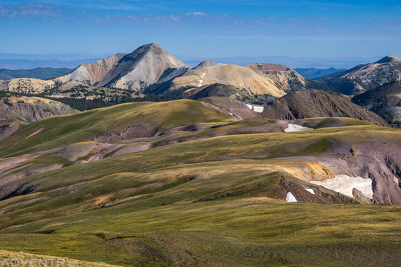
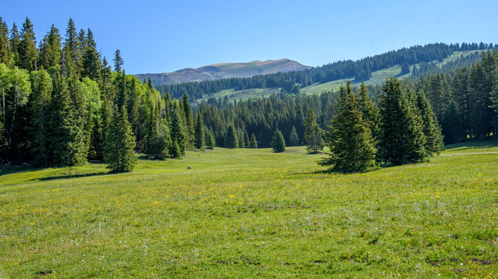
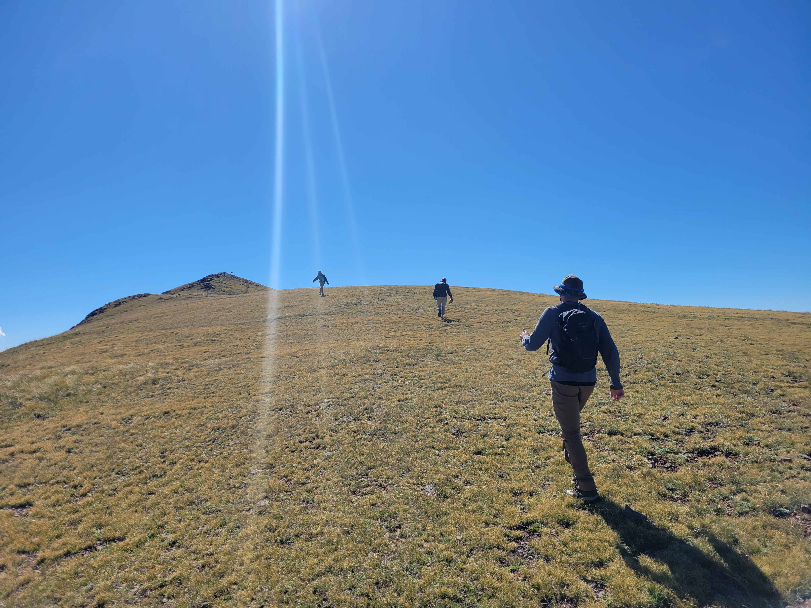
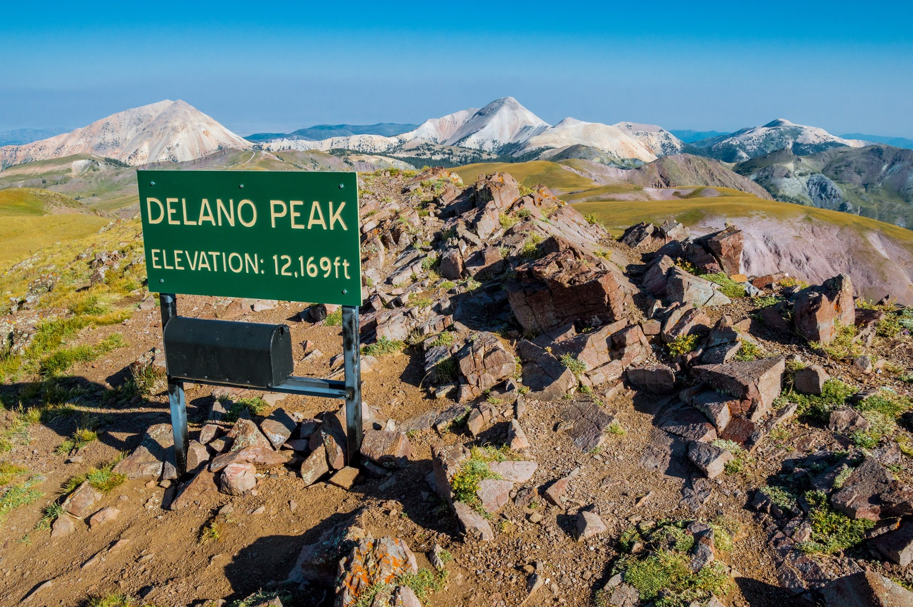

Mount Delano is one of the prominent peaks in the Tushar Mountains, located near Beaver, Utah. Rising to an
elevation of approximately 12,173 feet, it stands as one of the highest peaks in the range. The mountain is named
after Columbus Delano, a 19th-century Secretary of the Interior. Known for its alpine beauty and relatively remote
location, Mount Delano offers breathtaking views, diverse flora and fauna, and an excellent opportunity for outdoor
enthusiasts to explore Utah's high country. The exposed summit, however, is notorious for its strong winds, which
can add an extra layer of challenge and exhilaration to the ascent.

Accessing the Trailhead
The trailhead to Mount Delano is most commonly accessed from Big John Flat, a popular camping and staging area
located off Forest Road 123. See this video for instructions on how to find the trailhead from Big John Flat.
This area is reachable by high-clearance vehicles, making it a hub for hikers, ATV
riders, and other recreationists. From Big John Flat, adventurers embark on a journey that takes them through
meadows filled with wildflowers, dense stands of pine and aspen, and open alpine terrain as they ascend towards the
summit. As the trail climbs higher, hikers will notice the trees thinning out, and most of the route lies above the
tree line, offering expansive, unobstructed views of the surrounding peaks.

The Hiking Experience

The hike to Mount Delano is moderate to strenuous, depending on the route and hiker experience. The most common
trail follows a well-defined path that climbs gradually before steepening near the summit. However, hikers should be
prepared for several “false summits” along the way, where the trail seems to crest, only to reveal more climbing
ahead. This can test both patience and perseverance, but the promise of incredible views keeps most hikers
motivated. Along the way, the exposed terrain allows for sweeping vistas, though it also means hikers should be
prepared for gusty winds at almost any point on the trail.
Wildlife and Natural Features
Mount Delano and its surrounding areas are home to a rich variety of wildlife. Hikers often spot mule deer, marmots,
and, occasionally, mountain goats grazing on the slopes. Bird enthusiasts may catch glimpses of golden eagles or
Clark’s nutcrackers soaring overhead. The flora is equally captivating, with hardy alpine plants such as lupines and
Indian paintbrush coloring the landscape during the summer months. Above the tree line, the terrain becomes rugged
and sparse, with low-lying vegetation clinging to the rocky ground in an inspiring display of resilience.
Reaching the Summit
Standing atop Mount Delano’s summit is a rewarding experience. The panoramic views extend for miles, encompassing
the rugged peaks of the Tushar range and the expansive valleys below.

Seasonal Considerations
Hiking Mount Delano is best undertaken in the late spring through early fall, as snow can linger well into the
summer due to the mountain’s high elevation. During the winter months, the area transforms into a haven for
snowmobilers and backcountry skiers. However, deep snow and unpredictable weather can make accessing the trailhead
and climbing the peak challenging during this time. The high winds that often sweep across the summit and ridgelines
are another factor to consider, as they can make winter ascents particularly dangerous.
A Destination Worth Exploring
For those seeking an off-the-beaten-path adventure, Mount Delano provides an excellent blend of physical challenge
and natural beauty. Whether approached as a day hike or part of a longer exploration of the Tushar Mountains, the
journey to its summit is an unforgettable experience. Hikers should come prepared for the wind and the mental
challenge of navigating false summits, but these obstacles only add to the sense of accomplishment upon reaching the
top. The pristine environment, rugged terrain, and stunning vistas make Mount Delano a must-visit destination for
outdoor enthusiasts in southern Utah.
What to wear
Moisture-wicking shirt
Lightweight fleece or down jacket for insulation
Waterproof and windproof jacket
Make sure you plan for the wind chill. The winds can reach up to 40 mph at the peak, and without a wind-breaking layer you will be cold regardless of how many hoodies you wear.
It's also important to bring lots of layers. Because of the elevation change, the temperature and conditions changes pretty drasticly along the hike and you'll want to take off and add on layers as you go.
Even in the warmest months it gets really cold on the peak, so don't be afraid to wear a pretty warm coat
Hat
Other Resources
Road Trip Ryan is a great webstie with lots of information about all sorts of adevntures in Utah.
This is a great video (not from Road Trip Ryan) that gives a comprehensive summary of camping near the peak, how to find the trailhead, and how to prepare. If their baby can do it, so can you!
A random live and interactive embedded Tableau graph
In addition to meeting the criteria for this assignment, this random Tableu graph also shows demonstrates how much cooler the mountains are in Utah than in Maine.